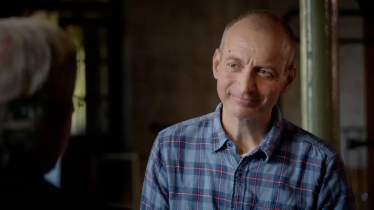
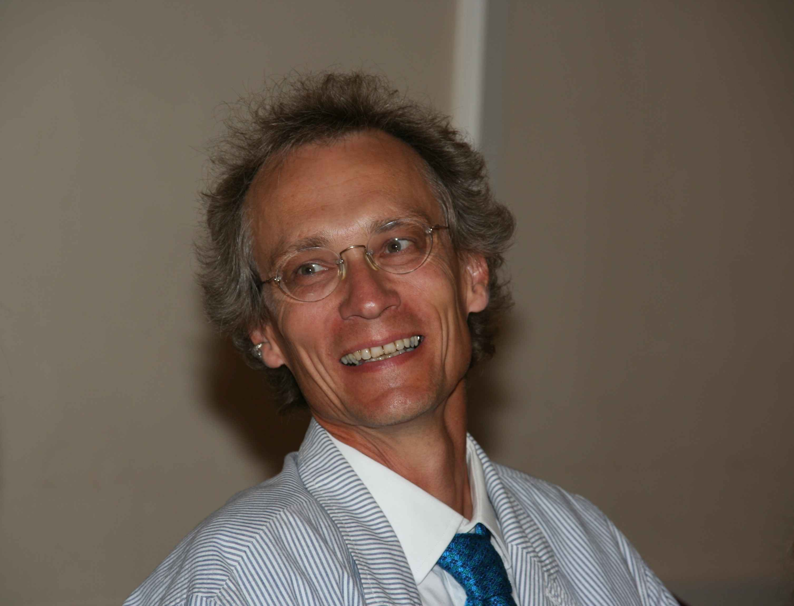
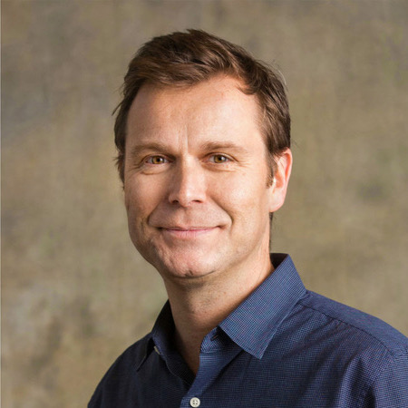
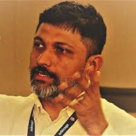
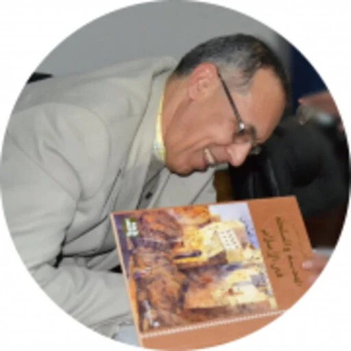
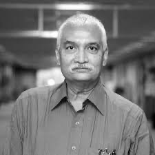

A science-communication platform I co-founded, exploring complexity and emergence across disciplines — cities, language, evolution, and temple architecture — through conversations with researchers and short explainers. Find it at madcomplexity.in and on YouTube.





